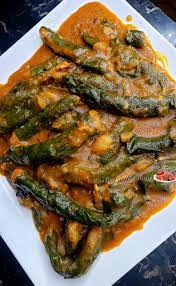

Ekwang

Description
Cameroonian savory dish made from grated cocoyams. Paste is then wrapped in hardly leaves in chucnky finger-style form. Then simmered in a currys of spices and herbs such as white pepper, ginge, garlic, etc. The curry is yellowish in colour and the leaves are a deep, rich green.
Ingredients
- six cocoyams
- cocoyam leaves
- white pepper
- ginger
- garlic
- habanero pepper
- mushroom seasoning
- mushrooms
- dried tofu
Steps
- Grate the cocoyams.
- Rinse the cocoyam leaves. Rip them into five by five inch squares (roughly).
- In a medium sized cooking pot, pour half a cup of palm oil. Let the oil met for a minute or two on the two and turn the heat off.
- Scoop a tablespoon full of the grated cocoyam paste into the edge of the leaf. Roll it to make a chungy finger shape.
- Place the roll, seam-side down, in the pot. Continue the previous step. Layer the rolls alternatively with the spices and remaining ingredients. Leave a two inch hole in the centre of the pot for ease of stirring later on.
- Fill the pot with water, about 4 inches above the top layer of the rolls. Place a lid on the pot. Bring the pot to a boil, then let simmer for 30 minutes.
- Serve hot. Enjoy!